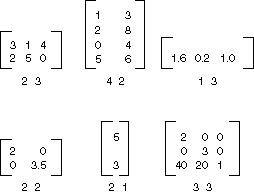

Матричное представление преобразований
Матрица m n × — это набор чисел, расположенных в строках m и n столбцах. Ниже показано несколько матрицы.

Можно добавить двух матриц такого же размера, путем добавления отдельных элементов. Ниже показаны два примера сложения матриц.

Матрица m n × можно будет умножено на матрицу n × p, а результатом является матрица m × p. Число столбцов в первой матрице должен быть таким же, как количество строк в матрице второй. Например матрицу 4 × 2 умножается на 2 × 3 матрицу, чтобы создать матрицу 4 × 3.
Точки на плоскости и строки и столбцы матрицы могут рассматриваться как векторы. Например (2, 5) — это вектор с двумя компонентами и (3, 7, 1) представляет собой вектор с тремя компонентами. Скалярное произведение двух векторов определяется следующим образом:
(a, b) • (c, d) = ac + bd
(a, b, c) • (d, e, f) = ad + быть + cf
Например, скалярное произведение (2, 3) и (5, 4) — (2)(5) + (3)(4) = 22. Скалярное произведение (2, 5, 1) и (4, 3, 1) — (2)(4) + (5)(3) + (1)(1) = 24. Обратите внимание, что скалярное произведение двух векторов является числом, не вектор. Обратите внимание на то, что скалярное произведение можно вычислить только в том случае, если два вектора имеют одинаковый номер компонентов.
A(i, j) быть ввода матрицы A i-ой строки и столбца ый. Например, объект (3, 2) — запись в матрице, А в третьей строке и столбце 2-й. Предположим, что A, B и C, матрицы и AB = C. Операции C вычисляются следующим образом:
C (i, j) = (строки i A) • (столбец j B)
Ниже показано несколько примеров перемножения матриц.

Если вы считаете, что точки на плоскости как матрицу 1 × 2, можно преобразовать эту точку путем его умножения матрицу 2 × 2. Ниже показано несколько преобразования, примененные к точке (2, 1).
Все преобразования, показанные на рисунке выше, являются линейными преобразованиями. Некоторые другие преобразования, такие как трансляции, не являются линейными и не может быть выражен как умножение на матрицу размером 2 × 2. Предположим, что нужно для начала точка (2, 1), повернуть на 90 градусов, сдвинуть на 3 единицы по оси x и 4 единицы по оси y. Это можно сделать с помощью выполнения умножения и сложения матриц.

Линейное преобразование (умножение на матрицу 2 × 2) и сдвиг (Добавление матрицу 1 × 2) вызывается аффинные преобразования. Для хранения всего преобразования в матрицу 3 × 3 является альтернативой аффинные преобразования в пару матриц (одна для линейной) и один для перевода. Чтобы это работало в матрице 1 × 3 с фиктивной третьей координатой должны храниться точки на плоскости. Обычно является сделать все сторонние координаты, равным 1. Например точка (2, 1) будет представлен в матрице [1 1, 2]. На следующем рисунке показан пример аффинного преобразования (поворот на 90 градусов; сдвиг на 3 единицы по оси x и 4 единицы по оси y) выраженное как умножение на матрицу 3 × 3.

В предыдущем примере точка (2, 1) сопоставляется точка (2, 6). Обратите внимание, что третий столбец матрицы 3 × 3 содержит числа от 0, 0, 1. Это всегда будет в случае матрицы 3 × 3 аффинные преобразования. Важные числа — шесть столбцов 1 и 2. Часть 2 × 2 верхнего левого матрицы представляет линейную часть преобразования, а первые две записи в третьей строке представляют перевод.
В GDI+ можно хранить аффинные преобразования в Matrix объекта. Так как третий столбец матрицы, задающей аффинное преобразование всегда является (0, 0, 1), укажите только шесть чисел в первых двух столбцах при создании Matrix объекта. Инструкция Matrix myMatrix = new Matrix(0, 1, -1, 0, 3, 4) создает матрицу, изображенную на рисунке выше.
Составные преобразования
Составное преобразование — это последовательность преобразований, один за другим. Рассмотрим матрицы и преобразования в следующем списке:
| Матрицы A | Повернуть на 90 градусов |
| Матрица B | Масштабирование с коэффициентом 2 по оси x |
| Матрица C | Сдвиг на три единицы по оси y |
Начнем с точкой (2, 1), представленный в матрице [1 1, 2] — и умножьте, B и затем C, точка (2, 1) будут подвергнуты три преобразования в указанном порядке.
[1 1, 2] ABC = [1 ПО 5-2]
А не хранить три части составного преобразования в три отдельных матрицы, можно умножить A, B и C вместе для получения в единую матрицу 3 × 3, в которой хранятся все составное преобразование. Предположим, что ABC = D. Затем точка, умноженная D дает тот же результат, как точка, умноженное на A, B и C.
[2 1 1]D = [-2 5 1]
На следующем рисунке показан матрицы A, B, C и D.

Тот факт, что матрица составного преобразования может быть создана путем перемножения матриц отдельных преобразования означает, что любая последовательность аффинных преобразований могут храниться в одном Matrix объекта.
Caution
Важен порядок составного преобразования. Вообще говоря, повернуть, затем масштабирование, а затем перевести не соответствует как масштабирования, поворота, а затем перевести. Точно так же важен порядок умножения матриц. В общем случае ABC не равно BAC.
Matrix Класс предоставляет несколько методов для составных преобразований: Multiply, Rotate, RotateAt, Scale, Shear, и Translate. В следующем примере создается матрица составного преобразования, сначала поворачивается на 30 градусов, а затем масштабируется с коэффициентом 2 по оси y и транслирует 5 единиц по оси x:
Matrix myMatrix = new Matrix();
myMatrix.Rotate(30);
myMatrix.Scale(1, 2, MatrixOrder.Append);
myMatrix.Translate(5, 0, MatrixOrder.Append);
Warning
It looks like the sample you are looking for does not exist.
На следующем рисунке матрицы.